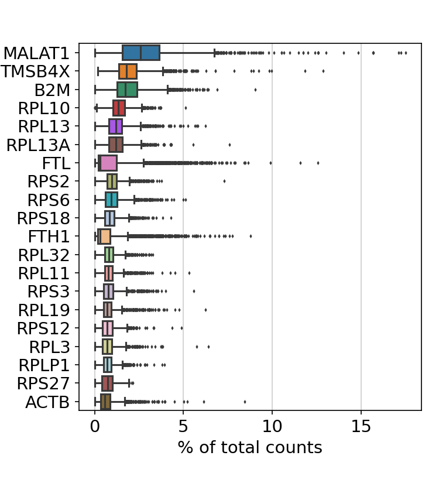
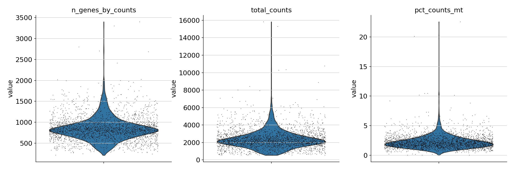
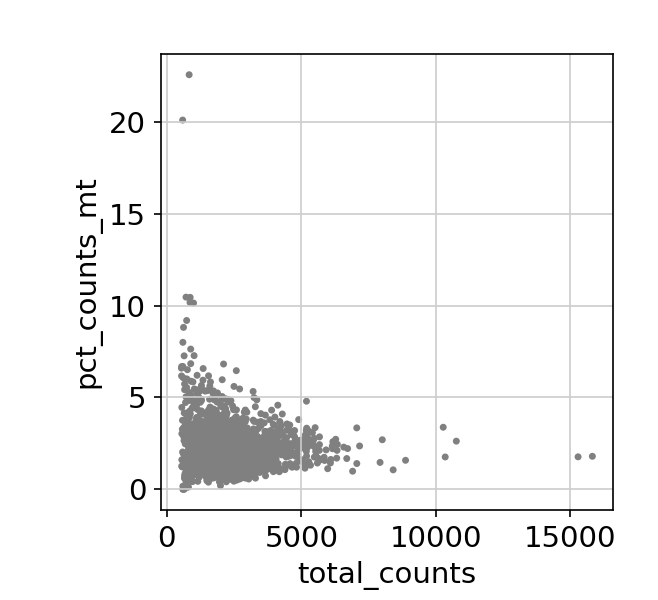

Scanpy is a scalable toolkit for analyzing single-cell gene expression data. It includes preprocessing, visualization, clustering, pseudotime and trajectory inference and differential expression testing. The Python-based implementation efficiently deals with datasets of more than one million cells.
This application contains graphical content and requires an X-Windows connection. It is primarily meant to be run via Jupyter notebooks.
Allocate an interactive session and run the program.
Sample session (user input in bold):
[user@biowulf]$ sinteractive
salloc.exe: Pending job allocation 46116226
salloc.exe: job 46116226 queued and waiting for resources
salloc.exe: job 46116226 has been allocated resources
salloc.exe: Granted job allocation 46116226
salloc.exe: Waiting for resource configuration
salloc.exe: Nodes cn0860 are ready for job
[user@cn0860 ~]$ module load scanpy
[+] Loading scanpy 1.8.1 on cn0860
[+] Loading singularity 3.8.2 on cn0860
[user@cn0860 ~]$ cp -r $SCANPY_DATA/* .
[user@cn0860 ~]$ python cluster.py
scanpy==1.8.1 anndata==0.7.6 umap==0.5.1 numpy==1.20.3 scipy==1.7.1 pandas==1.3.2 scikit-learn==0.24.2 statsmodels==0.12.2 python-igraph==0.9.6 pynndescent==0.5.4
... reading from cache file cache/data-filtered_gene_bc_matrices-hg19-matrix.h5ad
normalizing counts per cell
finished (0:00:00)

filtered out 19024 genes that are detected in less than 3 cells 

/Miniconda/lib/python3.9/site-packages/scanpy/preprocessing/_normalization.py:155: UserWarning: Revieved a view of an AnnData. Making a copy.
view_to_actual(adata)
normalizing counts per cell
finished (0:00:00)
extracting highly variable genes
finished (0:00:00)

/Miniconda/lib/python3.9/site-packages/scanpy/preprocessing/_simple.py:373: UserWarning: Revieved a view of an AnnData. Making a copy.
view_to_actual(adata)
regressing out ['total_counts', 'pct_counts_mt']
sparse input is densified and may lead to high memory use
finished (0:00:10)
[user@cn0860 ~]$ exit salloc.exe: Relinquishing job allocation 46116226 [user@biowulf ~]$
Create a batch input file (e.g. scanpy.sh). For example:
#!/bin/bash module load scanpy python my_script.py
Submit this job using the Slurm sbatch command.
sbatch [--cpus-per-task=#] [--mem=#] scanpy.sh